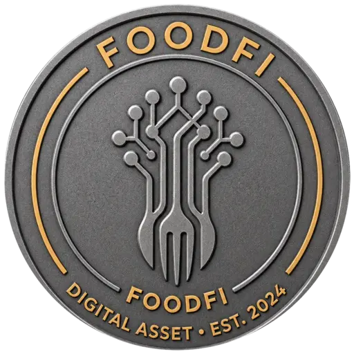

Гостям
Приложение для iOS и Android, кошелёк FDFi, карта FoodFi Gold и вознаграждения Dine-to-Earn за чеки и отзывы.
FOODFI · FDFi
FoodFi объединяет гостей и рестораны в одной экосистеме: приложение с кошельком FDFi, карта Gold и платежи с прямыми чаевыми.

ЭКОСИСТЕМА
FoodFi проектирует единый сценарий оплаты для гостей, ресторанов и персонала.
Приложение для iOS и Android, кошелёк FDFi, карта FoodFi Gold и вознаграждения Dine-to-Earn за чеки и отзывы.
Бесконтактная оплата, электронные чеки и облачная синхронизация между кассой, приложением гостя и кухней.
Гость выбирает размер чаевых в электронном чеке. По плану FoodFi, чаевые поступают в FDFi прямо в кошелёк официанта.
НОЯБРЬ 2026 — 2028+
Шесть этапов развития FoodFi. Даты, показатели и интеграции отражают планы проекта.
Приложение для iOS и Android со встроенным кошельком, биометрическим входом и push-уведомлениями о расходах.
Планируется публичный раунд FDFi с лимитом $2,4 млн, аудит смарт-контрактов и выпуск токенов по графику вестинга.
Личный кабинет с аналитикой и некастодиальным кошельком FDFi. Целевое время проведения платежа — менее 450 мс.
Бесконтактный терминал FoodFi с целевым временем подтверждения 320 мс.
Планируются интеграции с API Binance, Bybit, OKX и Uniswap, а также сценарии обмена FDFi на TON и USDT.
Цель — 50 000 ресторанов в 35 странах и присутствие более чем в 30 мегаполисах.
ДЕМОНСТРАЦИЯ
Выберите размер чаевых и посмотрите, как FoodFi покажет их в электронном чеке. Демо использует условные суммы в FDFi.
Откройте бота проекта в Telegram.